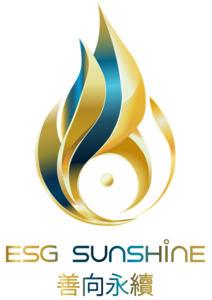

2026 柏克萊國際永續人才培力 課程學習中心
一站式入口平台｜整合 Berkeley Haas 永續策略創新、TSISDA 與台灣尤努斯基金會在地轉型實務模組，提供學員、TA、導師最完整的線上學習協作網絡。
最新公告 (Announcements)
2026/07/07
重要行動
[填寫預約表單] 請各位學員於本週五 (07/10) 中午 12:00 前，點擊下方按鈕至 Google 表單填寫您偏好的 Consulting Time (週日顧問諮詢時段)，以便服務中心為您安排專屬產學 Mentor 導師。
2026/07/05
系統通知
[權限開通] 2026 學年度線上 Live 教室入口與學員專區 Google Drive 皆已全數部署完畢。請留意您註冊信箱是否收到權限開通邀請。
課程資訊大綱
- 目標： 合規底盤與創價轉型。
- 架構： 6 週 / 72 小時高密度設計。
- 時程： 週六主課 週日顧問諮詢。
- 修業： 出席率 80% 可獲官方雙證書。
- 包含重大性分析與數據治理。
線上課程大廳
- 週六主課程： 線上 Live 學習同步口譯。
- 週日諮詢： Mentor Office Hours 輔導。
- 專題研討： 策略創新房 & 轉型實務房。
- 課堂常規： 線上互動、改名與驗證。
- 提供全線上與混合軌道交付彈性。
學員共享雲端
- 2026 最新官方學員手冊。
- Cohort Summer 通訊名單。
- 開課正式通知與每週提醒信。
- 每週課堂精華包與補充閱讀。
- 學員反思筆記與個人矩陣模板。
作業成果提交
- 每週要求： 反思筆記與階段成果。
- 最終 Capstone： 永續執行矩陣。
- 規格： PDF 格式與指定命名原則。
- 反饋： 產學 Mentor 與助教回饋。
- 嚴格追蹤各階段截止時間點。
技術支援與工具
- AI 即時同步翻譯工具設定指南。
- AnyDesk 遠端桌面控制工具下載。
- 隱私傳輸： 企業敏感數據專屬通道。
- 遠距連線異常快速排除手冊。
- 即時串流與聲音異常排除聯絡。
企業健檢與影響力
- 高階企業 ESG 健檢與診斷服務。
- 一對一永續轉型顧問客製化建議。
- 社會影響力專案 (ESG Sunshine) 對接。
- 協助企業梳理產學資源與政府補助。
- 建構企業永續策略藍圖實地延伸。
6週核心培力：雙軌並列排程對照
6週 Lecture Syllabus 主題
- W1 Purpose-Driven Strategy, Stakeholder & Materiality
- W2 Strategy Architecture & KPI Alignment
- W3 Innovation Matrix & ESG Project Portfolio
- W4 Ecosystem Platform Strategy & Impact Modeling
- W5 Dashboard Blueprint & Data Architecture
- W6 Governance System, Budgeting & Strategic Rhythm
6週 Consulting Time 交付成果
- W1 組織永續戰略挑戰陳述書草案
- W2 重大性矩陣與治理擁有者地圖初稿
- W3 ESG 能力缺口評估與變革準備度盤點
- W4 ESG 創新原型概念與循環經濟機會掃描
- W5 導入 Owners / Metrics / Milestones 執行矩陣 V2
- W6 最終永續執行矩陣 (Final Matrix) 與溝通計畫
一站式綜效公約：
本服務中心旨在將「課程入口、線上教學、教材資產、複習錄影、AI 翻譯、成果繳交、TA 營運」整合成互斥且窮盡（MECE）的清晰架構，協助學員高效率將合規指標轉化為企業競爭力。
本服務中心旨在將「課程入口、線上教學、教材資產、複習錄影、AI 翻譯、成果繳交、TA 營運」整合成互斥且窮盡（MECE）的清晰架構，協助學員高效率將合規指標轉化為企業競爭力。